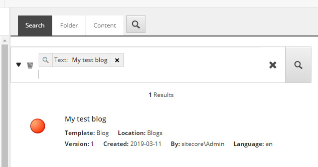
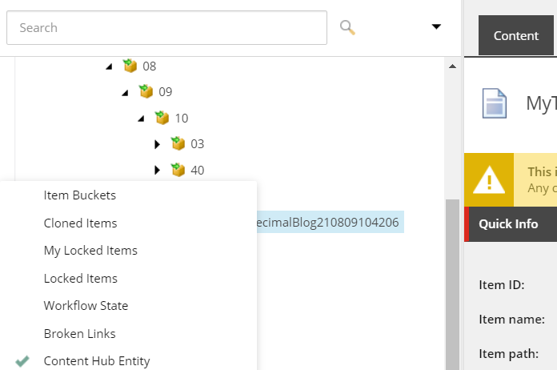
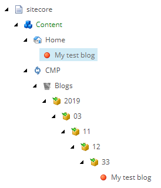

Prepare a CMP item for publishing
How to find and publish CMP items that have been synchronized to Sitecore.
Sitecore stores Content Marketing Platform (CMP) items in item buckets. An item bucket is a container that you use to store, retrieve, and work with large number of items.
When you work with a synchronized CMP item, we recommend that you clone the item to the content folder, and use the new clone for publishing. Editing the original item can cause synchronization to break, and can slow the publishing process down.
Note
A cloned item inherits the field values from the original item. If you copy or duplicate the item instead of cloning, the item values are no longer synced.
To clone an item you must first locate it, either by searching for it or by using a bucket view to navigate to it. When you have located it, you can clone it.
By default, Sitecore does not display bucket items in the content tree. When bucket items are hidden, you must use the Sitecore search engine to find a bucket item.
To find a CMP item using search:
In the content tree, navigate to /sitecore/content/CMP.
On the Search tab, enter a search term and click the Search icon. Sitecore now displays the items that match your search parameters.

If you want to navigate through the bucket items using the content tree, you must activate the bucket view.
To find CMP items using the bucket view:
In the content tree, navigate to sitecore/content/CMP.
On the menu ribbon, on the View tab, select Buckets. Sitecore now displays the items contained in buckets.
Navigate to a CMP item in a bucket in the content tree. On the Content tab, above the Quick info section, a warning message informs you that the selected entity is synchronized from a content hub entity.
For easy reference, you can mark an item as a content hub entity. On the item row, right click on the left gutter. In the menu, select Content Hub Entity.
 The content tree displays a red dot in the gutter to indicate that the item is synchronized from a content hub entity.
To clone a CMP item:
Locate the item you want to clone, by either searching for it or locating it in a bucket view.
On the menu ribbon, on the Configure tab, click Clone. Locate the new cloned item under the site root item:
Check the workflow and publish the item. When the item is published, check whether it is available on the website.